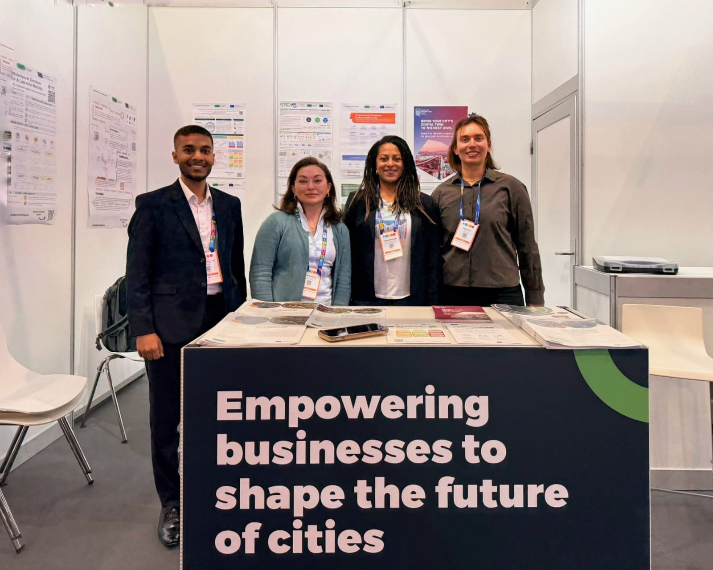

News3-5 Nov 2026
PROMISE presents Mobilitix at Smart City Expo World Congress 2026
The PROMISE team presented Mobilitix, the project's Micro-mobility Decision Support Tool (MDST), at Smart City Expo World Congress 2026 in Barcelona as part of the Driving Urban Transitions (DUT) Partnership.
Try it